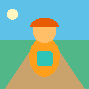
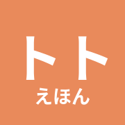
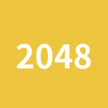

Win アプリ
介護の日本語、ゲーム、絵本。
Free apps for kids & caregivers.
ဂျပန်စကား・ဂိမ်း・ပုံပြင်စာအုပ်
Win 介護手帳介護の日本語437語をミャンマー語訳つきで
ပြုစုစောင့်ရှောက်ရေး ဂျပန်စကားလုံး
ပြုစုစောင့်ရှောက်ရေး ဂျပန်စကားလုံး
介護技能評価試験 練習特定技能（介護）の試験対策。ミャンマー語の訳・解説つき
စာမေးပွဲ လေ့ကျင့်ရန်
စာမေးပွဲ လေ့ကျင့်ရန်

愛翔とみやちゃんのジャングルランスワイプで走るランニングゲーム
Endless running game
ပြေးတမ်း ဂိမ်း
Endless running game
ပြေးတမ်း ဂိမ်း
フォト加工フィルター・文字・スタンプ・フレーム
Photo editor
ဓာတ်ပုံ ပြင်
Photo editor
ဓာတ်ပုံ ပြင်
仕事さがし ガイド求人のさがし方・面接の日本語・求人メモ
Job search guide
အလုပ်ရှာ လမ်းညွှန်
Job search guide
အလုပ်ရှာ လမ်းညွှန်
ミンガラーバー！1000語でミャンマー語（日本人向け）
Learn Burmese (for Japanese speakers)
ဂျပန်လူမျိုးများအတွက် မြန်မာစာ
Learn Burmese (for Japanese speakers)
ဂျပန်လူမျိုးများအတွက် မြန်မာစာ
日本で働く ガイドビザ・給料・休み・税金・相談先
Working in Japan guide
ဂျပန်မှာ အလုပ်လုပ်ရန် လမ်းညွှန်
Working in Japan guide
ဂျပန်မှာ အလုပ်လုပ်ရန် လမ်းညွှန်
タッチであそぼ1〜3さい向け。13種類・6か国語
For ages 1–3. 6 languages
ကလေးငယ် ကစားစရာ
For ages 1–3. 6 languages
ကလေးငယ် ကစားစရာ

ゆっくり トト日本語・ミャンマー語・英語の絵本
ကလေး ပုံပြင်စာအုပ်
ကလေး ပုံပြင်စာအုပ်
どうぶつ合体同じ動物をくっつけて進化させるゲーム

Win パズル 2048数字を合体させるパズル
📱 ホーム画面に置く方法
アプリを開いて、Safariの「共有」→「ホーム画面に追加」。Safari မှာ ဖွင့်ပြီး「Share」→「Add to Home Screen」